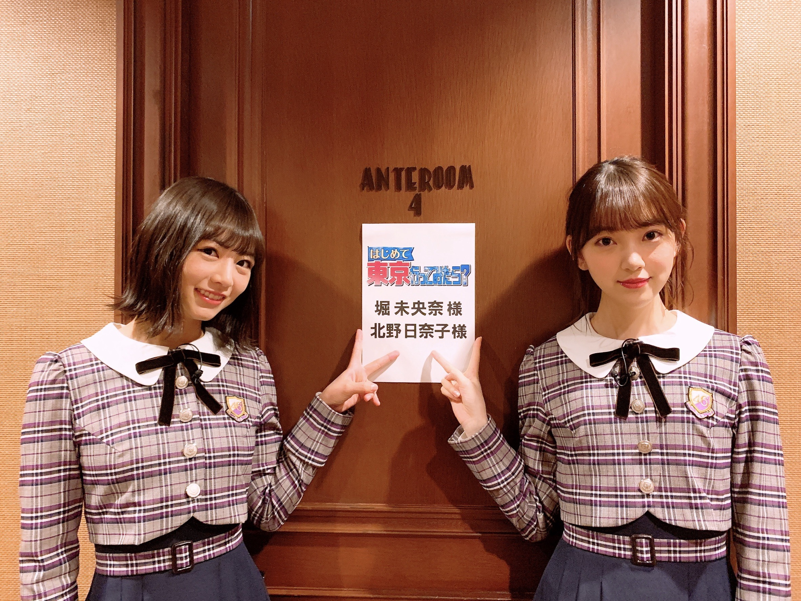
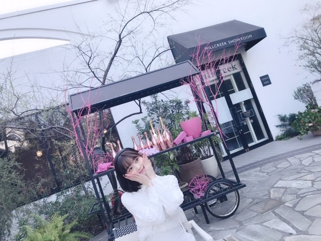

2019/0329Fri#2期6周年
明日3/30(土)18:30〜21:00 テレビ東京
「はじめて東京行ってみたら？」
2人でバラエティは初めてだったけど、
顔見合わせたりしてずっと笑ってました。笑
何だかんだ同い年だし同期だし
日奈子といると落ち着きます✨

みてね！
昨日、3月28日で
2期生6周年でした！！✨✨
いろんなことを思い出して、
辛かったこと悔しかったことも数え切れないくらいあったけどやっぱりメンバーといる時間がこの6年間圧倒的に多く占めていて家族みたいで、
その中でも同期は私にとって特別な存在です。
だから楽しかった思い出、嬉しかったことが6年間を振り返ったときにたくさん出てきました☺︎
それは2期みんなが頑張っていたから、そばにいてくれたから。
不器用ながらにちゃんと前を見て周りを見て
自分のやるべきこと、課題、目標を見つけて前へ進もうとする2期生。力強いしかっこいいし、そんな熱い想いを実は持っている所が大好きです
幸せになってほしいな...
って心から思います。
最近は1期生の方、そしてかりんの卒業もありより一層いま居るメンバーが手を取り合って頑張らないといけない時だなと感じます
大好きだからこそ、憧れてるからこそ、尊敬しているからこそ、先輩達に負けたくない！！って思います^^
見てきた景色、先輩の背中、同期の努力、後輩の活躍、全ての事実を忘れずに目に焼き付けてこれからの自分が何をできるか、新しいものを造っていける人になれるように頑張りたいです✨
これからも1期2期3期4期全員で1つのグループ
乃木坂46をよろしくお願いします！


明日はTGC！
横アリでお待ちしています！
では〜
2019/03/29 20:48
コメント(342)
こんにちは！未央奈ちゃんには初コメです！
2期生6周年おめでとう(^^)
乃木坂全体ももちろん好きだけど、2期生の一体感、雰囲気がすごく好きです♩
これからも応援しています(*'▽'*)
あ、ザンビ の実乃梨さん素晴らしかった！
ホットギミックも楽しみ！
2期生6周年おめでとう(^^)
乃木坂全体ももちろん好きだけど、2期生の一体感、雰囲気がすごく好きです♩
これからも応援しています(*'▽'*)
あ、ザンビ の実乃梨さん素晴らしかった！
ホットギミックも楽しみ！
2期生のみんな、6周年おめでとう！
努力、感謝、笑顔、いつでもこの3つの1つも欠かすことなく、1期生の姿を見ながら健気に頑張り続けてきた2期生が大好きです。2期生のみんなの乃木坂への熱い想い、ファンにはちゃんと届いてるからね！
これから乃木坂46の中心となっていって、もっともっと成長していく姿、楽しみにしてるよ！
かりんちゃんの卒業は寂しいけど、かりんちゃんや卒業した他のメンバー含め、乃木坂46の2期生のこれからの活躍に期待してます！！
努力、感謝、笑顔、いつでもこの3つの1つも欠かすことなく、1期生の姿を見ながら健気に頑張り続けてきた2期生が大好きです。2期生のみんなの乃木坂への熱い想い、ファンにはちゃんと届いてるからね！
これから乃木坂46の中心となっていって、もっともっと成長していく姿、楽しみにしてるよ！
かりんちゃんの卒業は寂しいけど、かりんちゃんや卒業した他のメンバー含め、乃木坂46の2期生のこれからの活躍に期待してます！！
6周年おつみおな！
ブログ更新ありがとう！！
6周年おめでとう！！
これからも乃木坂の中心となって頑張ってねー！！
僕も応援し続けるからねー！！
31日の大阪の全握に行けなくて会えないのがとても残念です！
6周年おめでとう！！
これからも乃木坂の中心となって頑張ってねー！！
僕も応援し続けるからねー！！
31日の大阪の全握に行けなくて会えないのがとても残念です！
2期生6周年おめでとう!!
2期生の絆本当に素晴らしいです! これからも特に2期生を応援し続けます!
2期生の絆本当に素晴らしいです! これからも特に2期生を応援し続けます!
未央奈いつもブログ更新ありがとう
未央奈のそういう熱い心好きです。
B.L.T.読んだからより一層伝えたいことがわかりました。
未央奈、そして、みんなで乃木坂46をよろしくね！
カチューシャ似合ってるよ！
では。
ようちゃんマン
未央奈のそういう熱い心好きです。
B.L.T.読んだからより一層伝えたいことがわかりました。
未央奈、そして、みんなで乃木坂46をよろしくね！
カチューシャ似合ってるよ！
では。
ようちゃんマン
六周年おめでとうございます。
変わったところ変わらないところ、いろいろあると思いますが、全て含めて乃木坂46二期生であり乃木坂46なのだと思います。
七年目も楽しみにしています。
(^ー^)
変わったところ変わらないところ、いろいろあると思いますが、全て含めて乃木坂46二期生であり乃木坂46なのだと思います。
七年目も楽しみにしています。
(^ー^)
堀さんの2期生思い、乃木坂思いなところ好きです。
これからも応援します！
これからも応援します！
ブログの更新ありがとう！
2期6周年おめでとう！同じ場所に向かって、別々に協力し合っている2期ってスゴイなと思う！力を合わせるだけが能じゃなく、別々の力を使うことでも力が大きくなることを見せてくれた！
やっぱりお互いに尊敬しあえている関係って素晴らしいなって思う！俺もそういう関係の人を増やしていかないとなー
これからも応援しているよー
TGCは行けないけど、全握行くよー
楽しみにしてるねー
2期6周年おめでとう！同じ場所に向かって、別々に協力し合っている2期ってスゴイなと思う！力を合わせるだけが能じゃなく、別々の力を使うことでも力が大きくなることを見せてくれた！
やっぱりお互いに尊敬しあえている関係って素晴らしいなって思う！俺もそういう関係の人を増やしていかないとなー
これからも応援しているよー
TGCは行けないけど、全握行くよー
楽しみにしてるねー
2期6周年おめでとう！これからもずっと応援してるよ！4期も増えて更に乃木坂が進化すると思うから期待してるよ！
堀ちゃんブログありがとう！
そして2期生6周年おめでとう、！
いつも2期生のみんなは仲良くて大好きです！！！
7年目もこれからもずっとずっと応援します、！！
そして2期生6周年おめでとう、！
いつも2期生のみんなは仲良くて大好きです！！！
7年目もこれからもずっとずっと応援します、！！
２期生、６周年おめでとう(*´ω｀*)❤️
これからも応援してます！！！
今、未央奈と近い髪型になっています！
もちろん未央奈ほど可愛くないけど！
ちょっとした共通点です(^^)
これからも応援してます！！！
今、未央奈と近い髪型になっています！
もちろん未央奈ほど可愛くないけど！
ちょっとした共通点です(^^)
堀ちゃん出るならみます！
七年目の活躍も楽しみにしていますね。
七年目の活躍も楽しみにしていますね。
2期生6周年おめでとう！みおなちゃんは個性豊かな人で変顔も面白い
ホットギミックスの主演おめでとう！絶対見にいく！
ホットギミックスの主演おめでとう！絶対見にいく！
二期生6周年おめでとう！
後輩も増えたしこれからますます中心となってグループを引っ張っていく存在が二期生だと思うから頑張ってね。応援してます。
ゴルゴンゾーラ聞いたよー
めっちゃよかった、メロディもすごい好きだし、メロディと歌詞と3人の歌声がマッチしててすごいよかったよー！
後輩も増えたしこれからますます中心となってグループを引っ張っていく存在が二期生だと思うから頑張ってね。応援してます。
ゴルゴンゾーラ聞いたよー
めっちゃよかった、メロディもすごい好きだし、メロディと歌詞と3人の歌声がマッチしててすごいよかったよー！
堀ちゃん、ブログ更新ありがとう。
そして、2期生6周年おめでとう。
7年目の応援しています。
そして、2期生6周年おめでとう。
7年目の応援しています。
6周年おめでとう！！！
これからも一生懸命応援します！！
全ツ行けるように勉強頑張るね、！
これからも一生懸命応援します！！
全ツ行けるように勉強頑張るね、！
２期生(^o^ゞ6周年！おめでとう
明日のテレ東、未央奈、日奈子楽しみにしてます
6周年おめでとうございます！可愛い！
6周年おめでとうございます
これからも頑張ってください！
かわいい
これからも頑張ってください！
かわいい
未央奈ー！
2期生6周年おめでとう！！
2期生は1人1人個性があって
ほんとに魅力的な人ばかり
これからも応援してます！
メンバーの卒業が続いてるけど、
残ってるメンバーで今まで築いてきたものを
受け継いで乃木坂が続いてくことを願ってます！
乃木坂ちゃんが大好きです！！！
2期生6周年おめでとう！！
2期生は1人1人個性があって
ほんとに魅力的な人ばかり
これからも応援してます！
メンバーの卒業が続いてるけど、
残ってるメンバーで今まで築いてきたものを
受け継いで乃木坂が続いてくことを願ってます！
乃木坂ちゃんが大好きです！！！
本当に先輩の卒業が増えてきてるので
2期、3期、4期、応援してます
2期、3期、4期、応援してます
6周年、おめでとう！
これからも乃木坂を
引っ張っていってね！
応援しています(^^)
これからも乃木坂を
引っ張っていってね！
応援しています(^^)
未央奈！
明日の放送楽しみにしてるよ～。
きぃちゃんと2人でバラエティに出たら、どんな融合を見せてくれるのかが楽しみです！
2期生、6周年おめでとう！
前に進もうとする姿勢はほんとに尊敬できるし、新しい乃木坂になりつつある今、2期生という花が開くことを願ってます。
2期生、大好きだよ！
明日の放送楽しみにしてるよ～。
きぃちゃんと2人でバラエティに出たら、どんな融合を見せてくれるのかが楽しみです！
2期生、6周年おめでとう！
前に進もうとする姿勢はほんとに尊敬できるし、新しい乃木坂になりつつある今、2期生という花が開くことを願ってます。
2期生、大好きだよ！
6周年おめでとう～
これからも応援してます！
これからも応援してます！
ブログ更新ありがとう！
カチューシャ最高に似合ってる！
勉強の癒しです〜！！！！！！
カチューシャ最高に似合ってる！
勉強の癒しです〜！！！！！！
TGC横アリ、乃木坂ライブが無いのは残念だけど、未央奈のランウェイをプラチナ席から声援送るよ＼(^o^)／
2期生6周年 おめでとうございます。
仲間想いなみおちゃんが
2期のエースで本当に良かったと思います。
素敵なブログをありがとう
仲間想いなみおちゃんが
2期のエースで本当に良かったと思います。
素敵なブログをありがとう
卒業ラッシュで寂しくなるけど、今いるメンバーで頑張ってね
今年の真夏の全国ツアーも楽しみにしてるよ！
今年の真夏の全国ツアーも楽しみにしてるよ！
２期生６周年おめでとうございます。
早いものですね。初めて乃木中に14人の２期生が登場した時の新鮮な姿は、今も鮮明に浮かんで来ます。
みんな、みんな大人になりましたね。
だけど、まだまだこれからですね。２期生の皆さんの力が必要なのはこれからが本番だと思います。
私は未央奈ちゃんのファンです。未央奈ちゃんのファンであるということは、２期生のファンでもあるのです。多分、ここに集う人達は、みんなそうだと思います。
私達は２期生が大好きですよ。
６周年おめでとうございます。
早いものですね。初めて乃木中に14人の２期生が登場した時の新鮮な姿は、今も鮮明に浮かんで来ます。
みんな、みんな大人になりましたね。
だけど、まだまだこれからですね。２期生の皆さんの力が必要なのはこれからが本番だと思います。
私は未央奈ちゃんのファンです。未央奈ちゃんのファンであるということは、２期生のファンでもあるのです。多分、ここに集う人達は、みんなそうだと思います。
私達は２期生が大好きですよ。
６周年おめでとうございます。
明日、TGC行きます！最近乃木坂に興味を持ち始めて、その中でも未央奈ちゃんが好きなので、明日会えるの楽しみです
2期生6周年おめでとう！
みんな仲がいいし、みんな可愛いから大好き！
2期生がこれからも活躍する事を楽しみにしてるね！
2期生がんばれ〜！！
きいちゃんとの番組絶対見るから！！
レコメンでゴルゴンゾーラ聴いたけど本当にいい曲！！
3人とも本当に大好きなメンバーだから何回も聴こうと思います！
堀ちゃんこれからも頑張ってね！
応援してます！
みんな仲がいいし、みんな可愛いから大好き！
2期生がこれからも活躍する事を楽しみにしてるね！
2期生がんばれ〜！！
きいちゃんとの番組絶対見るから！！
レコメンでゴルゴンゾーラ聴いたけど本当にいい曲！！
3人とも本当に大好きなメンバーだから何回も聴こうと思います！
堀ちゃんこれからも頑張ってね！
応援してます！
訂正させてください。
ちょっと前に送ったコメントの文中に「乃木中」と入れてしまいました。「乃木どこ？」の間違いでした、ごめんなさい。
ちょっと前に送ったコメントの文中に「乃木中」と入れてしまいました。「乃木どこ？」の間違いでした、ごめんなさい。
6周年おめでとう！！
未央ちゃんらしく頑張って下さい！
絶対見ます！
未央ちゃんらしく頑張って下さい！
絶対見ます！
なんか心に染みました
明日も頑張る❗
明日も頑張る❗
6周年おめでとう^_^
そしてザンビもお疲れ様（＾∇＾）
最終回はまさかの展開だったけども、未央奈のラストシーンは見入ってしまったよ(^-^)
次回作があるならまた観たい作品だから、期待してます（＾ν＾）
そしてザンビもお疲れ様（＾∇＾）
最終回はまさかの展開だったけども、未央奈のラストシーンは見入ってしまったよ(^-^)
次回作があるならまた観たい作品だから、期待してます（＾ν＾）
6周年おめでとう！
未央奈が持ってる力だったら2期生も乃木坂も引っ張っていけるよ！
また新しい世界を見させてくれることを期待してる！
未央奈が持ってる力だったら2期生も乃木坂も引っ張っていけるよ！
また新しい世界を見させてくれることを期待してる！
未央奈ちゃんお疲れ様です。そして、２期生6周年おめでとう そして、今までありがとう‼️これからも宜しくお願いね‼️1期生やかりんちゃんが卒業していくなかで、これからは未央奈ちゃんの世代が乃木坂46を今まで以上に引っ張っていかないといけないと思います。でも、未央奈ちゃんをはじめ、皆頑張り過ぎて体調をくずす事が多いので心配もしています。引っ張り方は人それぞれ違うので、個々自分らしいやり方で乃木坂を皆で力を合わせて支えあってほしいです。未央奈ちゃんは以前、今、皆危機感を持っているとおしゃっていました。その気持ちは凄く大事だと思います。その気持ち忘れずに頑張ってね‼️辛い時は私達ファンが力を与えるよ‼️私は未央奈ちゃんの笑顔や頑張ってる姿を見て、自分ももっと頑張らなくちゃと思ったし、沢山励まされました。本当にありがとう‼️大好きやおー
みおなちゃん
ブログ更新してくれてありがとうございます
ザンビ終わっちゃいましたねー、、、
ラストのシーンで泣きました
マジ泣きました
みのりちゃんのあのなんとも言えない
顔を見てたらなんか自然と、、
みおなちゃんが乃木坂46に
入ってくれて嬉しいです
改めて堀未央奈さん大好きです
ずっと応援してます
ももかNo.8
ブログ更新してくれてありがとうございます
ザンビ終わっちゃいましたねー、、、
ラストのシーンで泣きました
マジ泣きました
みのりちゃんのあのなんとも言えない
顔を見てたらなんか自然と、、
みおなちゃんが乃木坂46に
入ってくれて嬉しいです
改めて堀未央奈さん大好きです
ずっと応援してます
ももかNo.8
2期生6周年おめでとう！！
それぞれの個性が多方面で
活躍してるのがすごいと思う(^^)
は〜社会人1年目始まっちゃった、、
それぞれの個性が多方面で
活躍してるのがすごいと思う(^^)
は〜社会人1年目始まっちゃった、、
ブログ更新ありがとう。
2期生6周年おめでとう！
これからも頑張ってください。
応援してます。
2期生6周年おめでとう！
これからも頑張ってください。
応援してます。
未央奈ブログ更新ありがと〜〜！
2期生が結成されてもう6周年なんて驚きだよ！これからも2期生のことを応援し続けるからね！
堀北コンビは2人とも同い年ですごい仲良さそうだから、明日が楽しみだよ！横アリのTGC頑張ってくださいね！
2期生が結成されてもう6周年なんて驚きだよ！これからも2期生のことを応援し続けるからね！
堀北コンビは2人とも同い年ですごい仲良さそうだから、明日が楽しみだよ！横アリのTGC頑張ってくださいね！
未央奈ちゃん、二期生6周年おめでとう！
これからも明るく楽しく頑張ってね。
これからも明るく楽しく頑張ってね。
これからも乃木坂46を頼むよ！
(*vд人)ｵﾈｶﾞｲｼﾏｽ
(*vд人)ｵﾈｶﾞｲｼﾏｽ
二期生6周年おめでとうございます
間違いなく堀さんの活躍とグループ全体の結束があるからここまで人気になっていると思います
堀さんの活躍をこれからもますます応援しています
間違いなく堀さんの活躍とグループ全体の結束があるからここまで人気になっていると思います
堀さんの活躍をこれからもますます応援しています
未央奈も2期生も大好きだぞ〜！
最近コメントが大人っぽくなってきた、素晴らしい！
未央奈かわいいかわいいかわいい
未央奈かわいいかわいいかわいい
２期生６周年おめでとうございます！
先日のレコメンでメールを読んでもらったのですが、やっぱり僕には声変わりが分かりません。もしかしてその時だけ喉の調子が悪かったんじゃないんですか？w
でも本当に声変わりしていたのならこれから気付けるように頑張ります！
先日のレコメンでメールを読んでもらったのですが、やっぱり僕には声変わりが分かりません。もしかしてその時だけ喉の調子が悪かったんじゃないんですか？w
でも本当に声変わりしていたのならこれから気付けるように頑張ります！
ブログ更新ありがと！
2期生6周年おめでとう！
2期生6周年おめでとう！


これからも応援します!!!!
明日顔晴ってください！
顔晴る
→どんなときも晴れた顔でという意味
↑覚えてくれると嬉しいです！
良かったら使ってください！